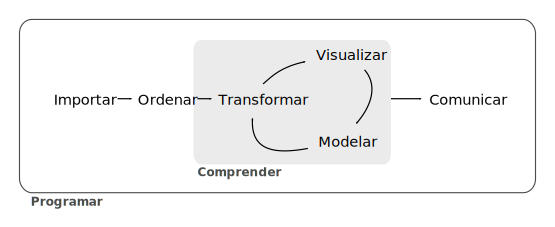
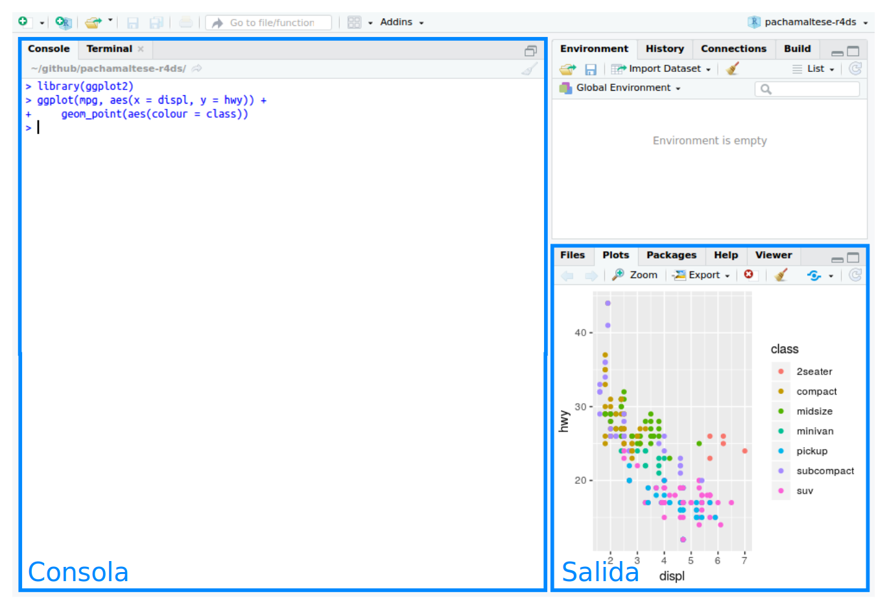

1 Introducción
La ciencia de datos (data science) es una disciplina fascinante que te permite convertir datos sin procesar en entendimiento, comprensión y conocimiento. El objetivo de este libro es ayudarte a aprender las herramientas más importantes para que puedas hacer ciencia de datos en R. Luego de leerlo, tendrás las herramientas para enfrentar una gran variedad de desafíos propios de esta área, usando las mejores partes de R.
1.1 Lo que aprenderás
La ciencia de datos es un campo muy amplio y no hay manera de que puedas dominarlo leyendo un solo libro. El objetivo de este, en particular, es entregarte una base sólida acerca de las herramientas más importantes. Nuestro modelo sobre cuáles son las herramientas necesarias para un proyecto típico de ciencia de datos se ve así:

Primero, debes importar tus datos hacia R. Típicamente, esto implica tomar datos que están guardados en un archivo, base de datos o API y cargarlos como data frame en R. Si no puedes llevar tus datos a R, no puedes hacer ciencia de datos con él.
Una vez que has importado los datos, es una buena idea ordenarlos. Ordenar los datos significa guardarlos de una manera consistente que haga coincidir la semántica del set de datos con la manera en que está guardado. En definitiva, cuando tus datos están ordenados, cada columna es una variable y cada fila una observación. Tener datos ordenados es importante porque si su estructura es consistente, puedes enfocar tus esfuerzos en las preguntas sobre los datos y no en luchar para que estos tengan la forma necesaria para diferentes funciones.
Cuando tus datos están ordenados, un primer paso suele ser transformarlos. La transformación implica reducir las observaciones a aquellas que sean de interés (como todas las personas de una ciudad o todos los datos del último año), crear nuevas variables que sean funciones de variables ya existentes (como calcular la rapidez a partir de la velocidad y el tiempo) y calcular una serie de estadísticos de resumen (como recuentos y medias). Juntos, a ordenar y transformar, se les llama manejar o domar los datos, porque hacer que estos tengan la forma con la que es natural trabajarlos, suele sentirse como una lucha.
Una vez que tienes los datos ordenados con las variables que necesitas, hay dos principales fuentes generadoras de conocimiento: la visualización y el modelado. Ambas tienen fortalezas y debilidades complementarias, por lo que cualquier análisis real iterará entre ellas varias veces.
La visualización es una actividad humana fundamental. Una buena visualización te mostrará cosas que no esperabas o hará surgir nuevas preguntas acerca de los datos. También puede darte pistas acerca de si estás haciendo las preguntas equivocadas o si necesitas recolectar datos diferentes. Las visualizaciones pueden sorprenderte, pero no escalan particularmente bien, ya que requieren ser interpretadas por una persona.
Los modelos son herramientas complementarias a la visualización. Una vez que tus preguntas son lo suficientemente precisas, puedes utilizar un modelo para responderlas. Los modelos son herramientas matemáticas o computacionales, por lo que generalmente escalan bien. Incluso cuando no lo hacen, resulta más económico comprar más computadores que comprar más cerebros. Sin embargo, cada modelo tiene supuestos y, debido a su propia naturaleza, un modelo no puede cuestionar sus propios supuestos. Esto significa que un modelo, por definición, no puede sorprenderte.
El último paso de la ciencia de datos es la comunicación, una parte crítica de cualquier proyecto de análisis de datos. No importa qué tan bien tus modelos y visualizaciones te hayan permitido entender tus datos, a menos que también puedas comunicar esos resultados a otras personas.
Alrededor de todas estas herramientas se encuentra la programación. La programación es una herramienta transversal que usarás en todas las partes de tu proyecto. No necesitas ser una personas experta en programación para hacer ciencia de datos, pero aprender más sobre ella es una gran ventaja porque te permite automatizar tareas recurrentes y resolver problemas con mayor facilidad.
En cualquier proyecto de ciencia de datos tendrás que ocupar estas herramientas, pero en muchos casos estas no serán suficientes. Hay un regla aproximada de 80-20 en juego: puedes enfrentar alrededor del 80 % de cualquier proyecto usando las herramientas que aprenderás en este libro, pero necesitarás utilizar otras para abordar el 20 % restante. A lo largo del libro te iremos señalando recursos donde puedes aprender más.
1.2 Cómo está organizado este libro
La descripción anterior de las herramientas propias de las ciencia de datos está organizada aproximadamente de acuerdo al orden en que usualmente se usan en el análisis (aunque, por supuesto, tendrás que iterar entre ellas múltiples veces). Sin embargo, en nuestra experiencia esa no es la mejor manera de aprenderlas:
Partir con la ingesta y orden de los datos no es lo óptimo porque el 80% del tiempo es un proceso rutinario y aburrido y el 20% restante es extraño y frustrante. ¡No es un buen lugar para aprender un tema nuevo! En cambio, partiremos con la visualización y transformación de datos que ya han sido importados y ordenados. De esta manera, cuando tengas que importar y ordenar tus propios datos, tu motivación se mantendrá alta porque sabrás que ese sufrimiento vale la pena.
Algunos temas se explican mejor con otras herramientas. Por ejemplo, creemos que es más fácil entender qué es un modelo si ya sabes sobre visualización, datos ordenados y programación.
Las herramientas de programación no son necesariamente interesantes en sí mismas; sin embargo, te permiten enfrentar problemas desafiantes. Te entregaremos una selección de herramientas de programación en la mitad del libro y luego verás cómo se pueden combinar con las herramientas propias de la ciencia de datos para enfrentar problemas de modelado interesantes.
En cada capítulo hemos tratado de mantener un patrón similar: partir con algunos ejemplos motivantes que te permitan ver el panorama completo y luego sumergirnos en los detalles. Cada sección del libro incluye ejercicios que te ayudarán a practicar lo que has aprendido. Pese a que puede ser tentador saltarse los ejercicios, no hay mejor manera de aprender que practicar con problemas reales.
1.3 Qué no vas a aprender
Hay algunos temas importantes que este libro no aborda. Creemos que es importante mantenernos enfocados con determinación en los aspectos esenciales, con el fin de que puedas ponerte en marcha lo más rápido posible. Eso implica que este libro no puede abordar todos los temas importantes.
1.3.1 Big data
Este libro se enfoca con orgullo en conjuntos de datos pequeños procesables en la memoria de tu computadora. Este es el lugar adecuado para partir, ya que no es posible que te enfrentes a datos de gran tamaño sin antes haber tenido experiencia con otros más pequeños. Las herramientas que aprenderás en este libro permiten manejar fácilmente datos de cientos de megabytes y, con un poco de cuidado, normalmente podrías hacerlas funcionar con 1 o 2 Gb de datos. Si habitualmente trabajas con datos más grandes (por ejemplo, 10-100 Gb), sería bueno que aprendieras sobre data.table. Este libro no enseña data.table, ya que su interfaz concisa hace que sea difícil de aprender por las pocas pistas lingüísticas que entrega. Sin embargo, si trabajas con datos grandes, la ventaja en términos de rendimiento hace que valga la pena el esfuerzo extra que requiere aprenderlo.
Si tus datos son más grandes que eso, es importante que consideres cuidadosamente si tu problema de big data no es, en realidad, un problema de datos pequeños oculto. Si bien los datos completos pueden ser grandes, muchas veces los necesarios para responder una pregunta específica son menos. Puede que encuentres un subconjunto, una submuestra o un resumen de datos que sí caben en la memoria y que de todos modos te permiten responder la pregunta que te interesa. El desafío en este caso es encontrar los datos pequeños adecuados, lo que usualmente requiere muchas iteraciones.
Otra posibilidad es que tu problema de big data sea realmente una suma de problemas de datos pequeños. Puede que cada uno de estos problema individuales quepa en la memoria; el problema es que tienes millones de ellos. Por ejemplo, puedes querer ajustar un modelo para cada persona de tu conjunto de datos. Eso sería trivial si tuvieras solo 10 o 100 personas, pero no si tienes un millón. Afortunadamente, cada problema es independiente del resto (una configuración a la que a veces se le llama de manera vergonzosa paralela), por lo que solo necesitas un sistema (como Hadoop o Spark) que te permita enviar diferentes sets de datos a diferentes computadoras para procesarlos. Una vez que hayas resuelto cómo responder la pregunta para un subset de datos usando las herramientas descritas en este libro, podrás aprender otras nuevas como sparklyr, RHIPE y ddr para responder la pregunta para todo el dataset.
1.3.2 Python, Julia y amigos
En este libro no aprenderás nada sobre Python, Julia u otros lenguajes de programación útiles para hacer ciencia de datos. No es que creamos que estas herramientas sean malas. ¡No lo son! En la práctica, la mayoría de los equipos de ciencia de datos utilizan una mezcla de lenguajes, habitualmente al menos R y Python.
Sin embargo, creemos fuertemente que es preferible dominar una sola herramienta a la vez. Mejorarás más rápido si te sumerges en un tema con profundidad, en vez de dispersarte entre muchos temas distintos. Esto no quiere decir que solo tengas que saber una cosa, solamente que aprenderás más rápido si te enfocas en una a la vez. Debes tratar de aprender cosas nuevas a lo largo de tu carrera, pero asegúrate de que tu entendimiento sea sólido antes de moverte hacia el siguiente tema interesante.
Creemos que R es un gran lugar para empezar tu camino en la ciencia de datos, ya que es un ambiente diseñado desde las bases hacia arriba para apoyarla. R no es solo un lenguaje de programación, sino también un ambiente interactivo para hacer ciencia de datos. Para apoyar esta interacción, R es mucho más flexible que muchos de sus equivalentes. Si bien esta flexibilidad tiene desventajas, su lado positivo es que permite desarrollar con facilidad gramáticas que se ajustan a las distintas partes de la ciencia de datos. Estos mini-lenguajes te ayudan a pensar los problemas como científico/a de datos, al tiempo que apoyan una interacción fluida entre tu cerebro y la computadora.
1.3.3 Datos no rectangulares
Este libro se enfoca exclusivamente en datos rectangulares, esto es, en conjuntos de valores que están asociados cada uno con una variable y una observación. Hay muchos conjuntos de datos que no se ajustan naturalmente a este paradigma, los que incluyen imágenes, sonidos, árboles y texto. Sin embargo, los data frames rectangulares son tan comunes en la ciencia y en la industria, que creemos que son un buen lugar para iniciar tu camino en la ciencia de datos.
1.3.4 Confirmación de hipótesis
Es posible dividir el análisis de datos en dos áreas: generación de hipótesis y confirmación de hipótesis (a veces llamada análisis confirmatorio). El foco de este libro está puesto decididamente en la generación de hipótesis o exploración de datos. Acá mirarás con profundidad los datos y, en combinación con tu propio conocimiento, generarás muchas hipótesis interesantes que ayudarán a explicar por qué se comportan como lo hacen. Evaluarás las hipótesis informalmente, usando tu escepticismo para cuestionar los datos de distintas maneras.
El complemento de la generación de hipótesis es la confirmación de hipótesis. Esta última es difícil por dos razones:
Necesitas un modelo matemático con el fin de generar predicciones falseables. Esto usualmente requiere considerable sofisticación estadística.
Cada observación puede ser utilizada una sola vez para confirmar una hipótesis. En el momento en que la usas más de una vez ya estás de vuelta haciendo análisis exploratorio. Esto quiere decir que para hacer confirmación de hipótesis tienes que haber “pre-registrado” (es decir, haber escrito con anticipación) tu plan de análisis y no desviarte de él incluso cuando hayas visto tus datos. Hablaremos un poco acerca de estrategias que puedes utilizar para hacer esto más fácil en el capítulo sobre modelos.
Es habitual pensar en el modelado como una herramienta para la confirmación de hipótesis y a la visualización como una herramienta para la generación de hipótesis. Sin embargo, esa es una falsa dicotomía: los modelos son utilizados usualmente para la exploración y, con un poco de cuidado, puedes usar la visualización para confirmar una hipótesis. La diferencia clave es qué tan seguido mires cada observación: si la miras solo una vez es confirmación; si la miras más de una vez es exploración.
1.4 Prerrequisitos
Hemos asumido algunas cosas respecto de lo que ya sabes con el fin de poder sacar mayor provecho de este libro. Tienes que tener una literacidad numérica general y sería útil que tuvieses algo de experiencia programando. Si nunca has programado antes y puedes leer en inglés, Hands on Programming with R escrito por Garrett podría ser un buen acompañamiento para este libro.
Hay cinco cosas que necesitas para poder ejecutar el código incluido en este libro: R, RStudio, una colección de paquetes llamada tidyverse, el paquete datos (que incluye los datos en español se se utilizan en los ejemplos y ejercicios) y una serie de otros paquetes. Los paquetes son la unidad fundamental de código reproducible de R. Incluyen funciones reutilizables, la documentación que describe cómo usarlas y datos de muestra.
1.4.1 R
Para descargar R debes acceder a CRAN, llamado así por sus siglas en inglés: the comprehensive R archive network. CRAN está compuesto de una serie de servidores espejo repartidos alrededor del mundo y es utilizado para distribuir tanto R como los paquetes de R. No es necesario que intentes elegir un servidor que esté cerca tuyo: en su lugar, puedes utilizar el servidor en la nube, https://cloud.r-project.org, que automáticamente lo identifica por ti.
Una vez al año sale una nueva versión importante de R y hay entre 2 y 3 ediciones menores en ese período. Es una buena idea actualizarlo regularmente. El proceso puede ser un poco engorroso, especialmente en el caso de las versiones mayores, que requieren que reinstales todos los paquetes que ya tienes. Sin embargo, no hacerlo puede ser peor. Para este libro, asegúrate de tener al menos la versión 3.5.
1.4.2 RStudio
RStudio es un ambiente de desarrollo integrado (o IDE, por su sigla en inglés: Integrated Development Environment) para programar en R. Puedes descargarlo e instalarlo desde http://www.rstudio.com/download. RStudio se actualiza un par de veces al año. Cuando haya una nueva versión disponible, el mismo programa te lo hará saber. Es una buena idea mantenerlo actualizado para que puedas aprovechar las mejores y más recientes características. Para este libro, asegúrate de tener al menos la versión 1.0.0.
Cuando abras RStudio, verás en la interfaz dos regiones clave:

Por ahora, todo lo que tienes que saber es que el código de R se escribe en la Consola y que hay que presionar Enter para ejecutarlo. ¡Aprenderás más a medida que avancemos!
1.4.3 El Tidyverse
Es necesario que instales también algunos paquetes de R. Un paquete es una colección de funciones, datos y documentación que permite extender las capacidades de R base. Los paquetes son clave para usar R de manera exitosa. La mayoría de los paquetes que aprenderás a usar en este libro son parte del llamado “Tidyverse”. Los paquetes del Tidyverse comparten una filosofía acerca de los datos y la programación en R, y están diseñados para trabajar juntos con naturalidad. Su nombre viene de la palabra en inglés “tidy”, que quiere decir “ordenado”.
Puedes instalar el tidyverse completo con una sola línea de código:
Escribe en tu computadora esa línea de código en la consola y luego presiona Enter para ejecutarla. R descargará los paquetes de CRAN y los instalará en tu computadora. Si tienes problemas durante la instalación, asegúrate que tienes conexión a Internet y que https://cloud.r-project.org/ no está bloqueado por tu firewall o proxy.
No podrás usar las funciones, objetos y archivos de ayuda de un paquete hasta que lo hayas cargado con library(). Una vez que has instalado un paquete, puedes cargarlo con la función library():
library(tidyverse)
#> ── Attaching packages ─────────────────────────────────────── tidyverse 1.3.0 ──
#> ✔ ggplot2 3.3.1 ✔ purrr 0.3.4
#> ✔ tibble 3.0.1 ✔ dplyr 1.0.0
#> ✔ tidyr 1.1.0 ✔ stringr 1.4.0
#> ✔ readr 1.3.1 ✔ forcats 0.5.0
#> ── Conflicts ────────────────────────────────────────── tidyverse_conflicts() ──
#> ✖ dplyr::filter() masks stats::filter()
#> ✖ dplyr::lag() masks stats::lag()Este mensaje te indica que el tidyverse está cargando los paquetes ggplot2, tibble, tidyr, readr, purrr, dplyr, stringr y forcats. Estos son considerados el corazón del Tidyverse porque los usarás prácticamente en cualquier análisis.
Los paquetes del Tidyverse cambian con bastante frecuencia. Puedes ver si existen actualizaciones disponibles y opcionalmente instalarlas ejecutando tidyverse_update().
1.4.4 El paquete datos
Con el fin de que este libro sea más accesible para el público hispanoparlante, además de la traducción del texto se han traducido los datos que se utilizan en los ejemplos y ejercicios.
El paquete datos se encuentra disponible en Github y puedes instalarlo ejecutando el siguiente código:
1.4.5 Otros paquetes
Existen muchas otros paquetes excelentes que no son parte del tidyverse porque resuelven problemas de otros ámbitos o porque los principios en los que se basa su diseño son distintos. Esto no los hace mejores o peores, solo diferentes. En otras palabras, el complemento del tidyverse no es el messyverse (del inglés messy, desordenado), sino muchos otros universos de paquetes interrelacionados. A medida que te enfrentes a más proyectos de ciencia de datos con R, aprenderás sobre nuevos paquetes y nuevas formas de pensar los datos.
1.5 Ejecutar código en R
En la sección anterior te mostramos algunos ejemplos de cómo ejecutar código en R. En el libro, el código se ve así:
Si ejecutas el mismo código en tu consola local, se verá así:
> 1 + 2
[1] 3Hay dos diferencias principales. La primera, es que en tu consola debes escribir el código después del signo >, llamado prompt; en el libro no te mostraremos el prompt. La segunda, es que en el libro el output, es decir, el resultado de ejecutar el código, está comentado: #>. En tu consola, el output aparecerá directamente después del código. Estas dos diferencias implican que, como esta es una versión electrónica del libro, puedes copiar directamente el código que aparece acá y pegarlo en tu consola.
A lo largo del libro usaremos una serie consistente de convenciones para referirnos al código:
Las funciones están escritas en una fuente para código y seguidas de paréntesis. La primera vez que son mencionadas ofreceremos una traducción al español:
sum()(del inglés suma) omean()(del inglés media).Otros tipos de objetos de R (como datos o argumentos de funciones) estarán en fuente para código, pero sin paréntesis:
vuelosox.Si queremos dejar claro de qué paquete viene un objeto, usaremos el nombre del paquete seguido de doble dos puntos:
dplyr::mutate()odatos::paises. Esto también es válido para el código de R.
1.6 Pedir ayuda y aprender más
Este libro no es una isla. No existe ningún recurso que por sí mismo te permita dominar R. A medida que empieces a aplicar las técnicas descritas en este libro a tus propios datos te encontrarás con preguntas que acá no respondemos. En esta sección se describen algunas sugerencias sobre cómo pedir ayuda y cómo seguir aprendiendo.
Si en algún momento ya no puedes avanzar, empieza buscando en Google. Usualmente, agregar “R” a tu búsqueda es suficiente para que se restrinja solo a resultados relevantes. Si lo que encuentras no es útil, probablemente sea porque no hay resultados disponibles en español. Google es particularmente útil para los mensajes de error. Si te aparece uno y no tienes idea de lo que significa, ¡prueba buscando en Google! Lo más probable es que alguien más se haya confundido con ese mensaje en el pasado y que haya ayuda en la web. Si el error te aparece en español u otro idioma, ejecuta en la consola Sys.setenv(LANGUAGE = "en") y luego vuelve a ejecutar el código. Es más probable que encuentres ayuda si el error que arroja R está en inglés.
Si Google no ayuda, prueba con la versión en español de stackoverflow. Parte dedicando un tiempo a buscar si existe ya una respuesta a tu pregunta agregando [R] a tu búsqueda para restringir los resultados a preguntas y respuestas que usen R. Si no encuentras nada útil, prepara un ejemplo reproducible o reprex. Un buen reprex hace más fácil que otras personas te puedan ayudar y al prepararlo probablemente resuelvas el problema por tu cuenta.
Hay tres cosas que debes incluir para hacer que tu ejemplo sea reproducible: los paquetes necesarios, datos y código.
Los paquetes deben ser cargados al inicio del script (que es como se le llama a la secuencia de comandos) para que sea fácil ver cuáles se necesitan para el ejemplo. Es una buena oportunidad para chequear que estás utilizando la última versión de cada paquete. Es posible que hayas descubierto un error (o bug, en inglés) que ya fue resuelto desde que instalaste el paquete. Para los paquetes del tidyverse, la manera más fácil de hacerlo es ejecutando
tidyverse_update().La manera más simple de incluir datos en una pregunta es usar
dput()para generar el código de R que los recree. Por ejemplo, para recrear el conjunto de datosmtautosen R, tendríamos que realizar los siguientes pasos.- Cargar el paquete que contiene los datos:
library(datos) - Ejecutar
dput(mtautos)en R - Copiar el output
En tu script reproducible, escribir
mtautos <-y luego pegar lo copiado.
Trata de buscar el subconjunto más pequeño de tus datos que te permita mostrar tu problema.
- Dedica tiempo a asegurarte que tu código puede ser fácilmente leído por otras personas:
Asegúrate de haber utilizado espacios y que los nombre de tus variables son a la vez concisos e informativos.
Realiza comentarios que indiquen dónde se encuentra el problema.
Haz lo posible por remover todo lo que no esté relacionado con el problema. Mientras más breve tu código, más fácil de entender y más fácil de arreglar.
Finalmente, revisa que tu ejemplo es efectivamente reproducible. Para ello, inicia una nueva sesión de R y copia y pega tu script ahí.
También deberías dedicar tiempo a prepararte para resolver problemas por tu cuenta antes de que ocurran. Invertir un poco de tiempo cada día aprendiendo R te entrega grandes beneficios a largo plazo. Una manera es siguiendo lo que hacen Hadley, Garrett y todas las personas de RStudio en el blog de RStudio. Ahí es donde se publican anuncios sobre nuevos paquetes, nuevas características del entorno de desarrollo integrado (IDE) y talleres presenciales. También te podría interesar seguir a Hadley (@hadleywickham) o a Garrett (@statgarrett) en Twitter, o a la cuenta @rstudiotips para mantenerte al día sobre las nuevas características RStudio.
Para estar al tanto acerca de la comunidad de R en general, puedes leer http://www.r-bloggers.com: que agrupa cerca de 500 blogs sobre R de todas partes del mundo, algunos incluso en español. Si tienes cuenta en Twitter, puedes seguir el hashtag #rstatsES (en español) o #rstats (en inglés). Twitter es una de las herramientas clave que usa Hadley para mantenerse al día sobre los nuevos desarrollos de la comunidad.
1.7 Agradecimientos
Este libro no es solo el producto de Hadley y Garrett, sino el resultado de muchas conversaciones (en persona y en línea) que hemos tenido con gente de la comunidad de R. Hay algunas personas a las que nos gustaría agradecer de manera particular, ya que han invertido muchas horas respondiendo preguntas tontas y ayudándonos a pensar mejor acerca de la ciencia de datos:
Jenny Bryan y Lionel Henry, por las muchas conversaciones útiles en torno al trabajo con listas y listas-columnas.
Los tres capítulos sobre flujo de trabajo fueron adaptados (con permiso) de http://stat545.com/block002_hello-r-workspace-wd-project.html de Jenny Bryan.
Genevera Allen por las dicusiones acerca de modelos, modelado, la perspectiva sobre de aprendizaje estadístico y la diferencia entre generación de hipótesis y confirmación de hipótesis.
Yihui Xie por su trabajo en el paquete bookdown, y por responder incansablemente las peticiones de nuevas características.
Bill Behrman por la lectura atenta del libro completo y por probarlo en su curso de Ciencia de Datos en Stanford.
A la comunidad en Twitter de #rstats que revisó todos los borradores de los capítulos y ofreció un montón de retroalimentación útil.
Tal Galili, por aumentar su paquete dendextend para soportar una sección sobre clustering que no llegó al borrador final.
Este libro fue escrito de manera abierta y muchas personas contribuyeron con pull requests para resolver problemas pequeños. Especiales agradecimientos para todos quienes contribuyeron via Github:
Thanks go to all contributers in alphabetical order: adi pradhan, Ahmed ElGabbas, Ajay Deonarine, @Alex, Andrew Landgraf, bahadir cankardes, @batpigandme, @behrman, Ben Marwick, Bill Behrman, Brandon Greenwell, Brett Klamer, Christian G. Warden, Christian Mongeau, Colin Gillespie, Cooper Morris, Curtis Alexander, Daniel Gromer, David Clark, Derwin McGeary, Devin Pastoor, Dylan Cashman, Earl Brown, Eric Watt, Etienne B. Racine, Flemming Villalona, Gregory Jefferis, @harrismcgehee, Hengni Cai, Ian Lyttle, Ian Sealy, Jakub Nowosad, Jennifer (Jenny) Bryan, @jennybc, Jeroen Janssens, Jim Hester, @jjchern, Joanne Jang, John Sears, Jon Calder, Jonathan Page, @jonathanflint, Jose Roberto Ayala Solares, Julia Stewart Lowndes, Julian During, Justinas Petuchovas, Kara Woo, @kdpsingh, Kenny Darrell, Kirill Sevastyanenko, @koalabearski, @KyleHumphrey, Lawrence Wu, Matthew Sedaghatfar, Mine Cetinkaya-Rundel, @MJMarshall, Mustafa Ascha, @nate-d-olson, Nelson Areal, Nick Clark, @nickelas, Nirmal Patel, @nwaff, @OaCantona, Patrick Kennedy, @Paul, Peter Hurford, Rademeyer Vermaak, Radu Grosu, @rlzijdeman, Robert Schuessler, @robinlovelace, @robinsones, S’busiso Mkhondwane, @seamus-mckinsey, @seanpwilliams, Shannon Ellis, @shoili, @sibusiso16, @spirgel, Steve Mortimer, @svenski, Terence Teo, Thomas Klebel, TJ Mahr, Tom Prior, Will Beasley, @yahwes, Yihui Xie, @zeal626.
1.8 Colofón
La versión online de este libro está disponible en http://es.r4ds.hadley.nz. El original en inglés puedes encontrarlo en http://r4ds.had.co.nz. Las versiones online seguirán evolucionando entre reimpresiones del libro físico. La fuente del libro en español está disponible en https://github.com/cienciadedatos/r4ds y la del libro en inglés en https://github.com/hadley/r4ds. El libro funciona con https://bookdown.org, que hace fácil convertir archivos de R Markdown a HTML, PDF e EPUB.
Este libro fue construido con:
devtools::session_info(c("tidyverse"))
#> ─ Session info ───────────────────────────────────────────────────────────────
#> setting value
#> version R version 4.0.0 (2020-04-24)
#> os Ubuntu 16.04.6 LTS
#> system x86_64, linux-gnu
#> ui X11
#> language en_US.UTF-8
#> collate en_US.UTF-8
#> ctype en_US.UTF-8
#> tz UTC
#> date 2020-06-08
#>
#> ─ Packages ───────────────────────────────────────────────────────────────────
#> package * version date lib source
#> askpass 1.1 2019-01-13 [1] CRAN (R 4.0.0)
#> assertthat 0.2.1 2019-03-21 [1] CRAN (R 4.0.0)
#> backports 1.1.7 2020-05-13 [1] CRAN (R 4.0.0)
#> base64enc 0.1-3 2015-07-28 [1] CRAN (R 4.0.0)
#> BH 1.72.0-3 2020-01-08 [1] CRAN (R 4.0.0)
#> blob 1.2.1 2020-01-20 [1] CRAN (R 4.0.0)
#> broom 0.5.6 2020-04-20 [1] CRAN (R 4.0.0)
#> callr 3.4.3 2020-03-28 [1] CRAN (R 4.0.0)
#> cellranger 1.1.0 2016-07-27 [1] CRAN (R 4.0.0)
#> cli 2.0.2 2020-02-28 [1] CRAN (R 4.0.0)
#> clipr 0.7.0 2019-07-23 [1] CRAN (R 4.0.0)
#> colorspace 1.4-1 2019-03-18 [1] CRAN (R 4.0.0)
#> crayon 1.3.4 2017-09-16 [1] CRAN (R 4.0.0)
#> curl 4.3 2019-12-02 [1] CRAN (R 4.0.0)
#> DBI 1.1.0 2019-12-15 [1] CRAN (R 4.0.0)
#> dbplyr 1.4.4 2020-05-27 [1] CRAN (R 4.0.0)
#> desc 1.2.0 2018-05-01 [1] CRAN (R 4.0.0)
#> digest 0.6.25 2020-02-23 [1] CRAN (R 4.0.0)
#> dplyr * 1.0.0 2020-05-29 [1] CRAN (R 4.0.0)
#> ellipsis 0.3.1 2020-05-15 [1] CRAN (R 4.0.0)
#> evaluate 0.14 2019-05-28 [1] CRAN (R 4.0.0)
#> fansi 0.4.1 2020-01-08 [1] CRAN (R 4.0.0)
#> farver 2.0.3 2020-01-16 [1] CRAN (R 4.0.0)
#> forcats * 0.5.0 2020-03-01 [1] CRAN (R 4.0.0)
#> fs 1.4.1 2020-04-04 [1] CRAN (R 4.0.0)
#> generics 0.0.2 2018-11-29 [1] CRAN (R 4.0.0)
#> ggplot2 * 3.3.1 2020-05-28 [1] CRAN (R 4.0.0)
#> glue 1.4.1 2020-05-13 [1] CRAN (R 4.0.0)
#> gtable 0.3.0 2019-03-25 [1] CRAN (R 4.0.0)
#> haven 2.3.1 2020-06-01 [1] CRAN (R 4.0.0)
#> highr 0.8 2019-03-20 [1] CRAN (R 4.0.0)
#> hms 0.5.3 2020-01-08 [1] CRAN (R 4.0.0)
#> htmltools 0.4.0 2019-10-04 [1] CRAN (R 4.0.0)
#> httr 1.4.1 2019-08-05 [1] CRAN (R 4.0.0)
#> isoband 0.2.1 2020-04-12 [1] CRAN (R 4.0.0)
#> jsonlite 1.6.1 2020-02-02 [1] CRAN (R 4.0.0)
#> knitr 1.28 2020-02-06 [1] CRAN (R 4.0.0)
#> labeling 0.3 2014-08-23 [1] CRAN (R 4.0.0)
#> lattice 0.20-41 2020-04-02 [3] CRAN (R 4.0.0)
#> lifecycle 0.2.0 2020-03-06 [1] CRAN (R 4.0.0)
#> lubridate 1.7.9 2020-06-08 [1] CRAN (R 4.0.0)
#> magrittr 1.5 2014-11-22 [1] CRAN (R 4.0.0)
#> markdown 1.1 2019-08-07 [1] CRAN (R 4.0.0)
#> MASS 7.3-51.5 2019-12-20 [3] CRAN (R 4.0.0)
#> Matrix 1.2-18 2019-11-27 [3] CRAN (R 4.0.0)
#> mgcv 1.8-31 2019-11-09 [3] CRAN (R 4.0.0)
#> mime 0.9 2020-02-04 [1] CRAN (R 4.0.0)
#> modelr 0.1.8 2020-05-19 [1] CRAN (R 4.0.0)
#> munsell 0.5.0 2018-06-12 [1] CRAN (R 4.0.0)
#> nlme 3.1-147 2020-04-13 [3] CRAN (R 4.0.0)
#> openssl 1.4.1 2019-07-18 [1] CRAN (R 4.0.0)
#> pillar 1.4.4 2020-05-05 [1] CRAN (R 4.0.0)
#> pkgbuild 1.0.8 2020-05-07 [1] CRAN (R 4.0.0)
#> pkgconfig 2.0.3 2019-09-22 [1] CRAN (R 4.0.0)
#> pkgload 1.1.0 2020-05-29 [1] CRAN (R 4.0.0)
#> plyr 1.8.6 2020-03-03 [1] CRAN (R 4.0.0)
#> praise 1.0.0 2015-08-11 [1] CRAN (R 4.0.0)
#> prettyunits 1.1.1 2020-01-24 [1] CRAN (R 4.0.0)
#> processx 3.4.2 2020-02-09 [1] CRAN (R 4.0.0)
#> progress 1.2.2 2019-05-16 [1] CRAN (R 4.0.0)
#> ps 1.3.3 2020-05-08 [1] CRAN (R 4.0.0)
#> purrr * 0.3.4 2020-04-17 [1] CRAN (R 4.0.0)
#> R6 2.4.1 2019-11-12 [1] CRAN (R 4.0.0)
#> RColorBrewer 1.1-2 2014-12-07 [1] CRAN (R 4.0.0)
#> Rcpp 1.0.4.6 2020-04-09 [1] CRAN (R 4.0.0)
#> readr * 1.3.1 2018-12-21 [1] CRAN (R 4.0.0)
#> readxl 1.3.1 2019-03-13 [1] CRAN (R 4.0.0)
#> rematch 1.0.1 2016-04-21 [1] CRAN (R 4.0.0)
#> reprex 0.3.0 2019-05-16 [1] CRAN (R 4.0.0)
#> reshape2 1.4.4 2020-04-09 [1] CRAN (R 4.0.0)
#> rlang 0.4.6 2020-05-02 [1] CRAN (R 4.0.0)
#> rmarkdown 2.2 2020-05-31 [1] CRAN (R 4.0.0)
#> rprojroot 1.3-2 2018-01-03 [1] CRAN (R 4.0.0)
#> rstudioapi 0.11 2020-02-07 [1] CRAN (R 4.0.0)
#> rvest 0.3.5 2019-11-08 [1] CRAN (R 4.0.0)
#> scales 1.1.1 2020-05-11 [1] CRAN (R 4.0.0)
#> selectr 0.4-2 2019-11-20 [1] CRAN (R 4.0.0)
#> stringi 1.4.6 2020-02-17 [1] CRAN (R 4.0.0)
#> stringr * 1.4.0 2019-02-10 [1] CRAN (R 4.0.0)
#> sys 3.3 2019-08-21 [1] CRAN (R 4.0.0)
#> testthat 2.3.2 2020-03-02 [1] CRAN (R 4.0.0)
#> tibble * 3.0.1 2020-04-20 [1] CRAN (R 4.0.0)
#> tidyr * 1.1.0 2020-05-20 [1] CRAN (R 4.0.0)
#> tidyselect 1.1.0 2020-05-11 [1] CRAN (R 4.0.0)
#> tidyverse * 1.3.0 2019-11-21 [1] CRAN (R 4.0.0)
#> tinytex 0.23 2020-05-19 [1] CRAN (R 4.0.0)
#> utf8 1.1.4 2018-05-24 [1] CRAN (R 4.0.0)
#> vctrs 0.3.1 2020-06-05 [1] CRAN (R 4.0.0)
#> viridisLite 0.3.0 2018-02-01 [1] CRAN (R 4.0.0)
#> whisker 0.4 2019-08-28 [1] CRAN (R 4.0.0)
#> withr 2.2.0 2020-04-20 [1] CRAN (R 4.0.0)
#> xfun 0.14 2020-05-20 [1] CRAN (R 4.0.0)
#> xml2 1.3.2 2020-04-23 [1] CRAN (R 4.0.0)
#> yaml 2.2.1 2020-02-01 [1] CRAN (R 4.0.0)
#>
#> [1] /home/travis/R/Library
#> [2] /usr/local/lib/R/site-library
#> [3] /home/travis/R-bin/lib/R/library